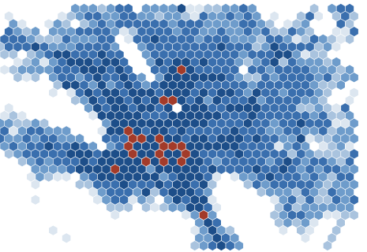
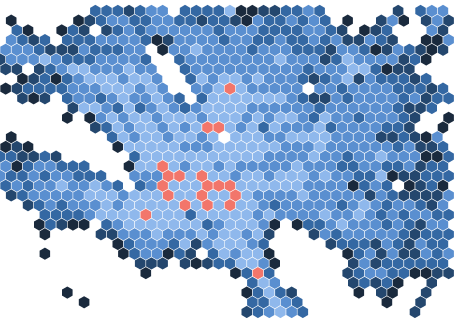
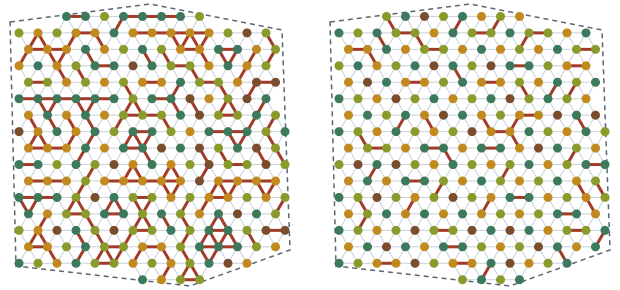
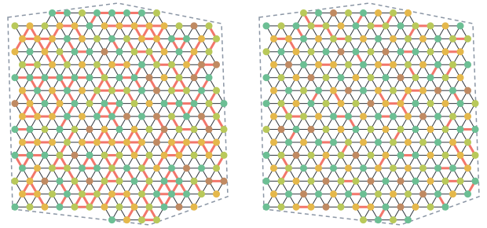
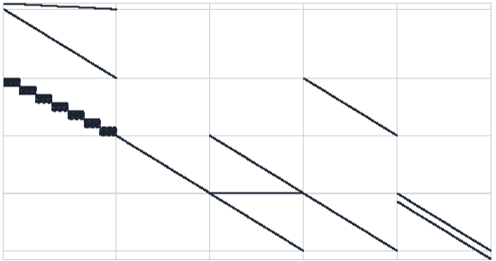
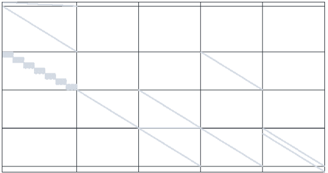

Applied mathematics and data science
Tecnológico de Monterrey
A logarithmic spiral, r = a ebθ, traced by its tangent lines. Every tangent meets the radius at the same angle, so the curve looks the same at every scale.
Quantitative modelling for operational decisions under uncertainty: spatial risk, resource allocation and stochastic planning. Undergraduate in Data Science and Mathematics at Tecnológico de Monterrey.
Practice. Raw data is immutable; every derived table and figure is regenerated from versioned code. Formulations are specified in LaTeX before implementation and, where tractable, validated against an exact solution. Solvers are written in C++; analysis and modelling in Python.
Current work. Chance-constrained optimisation and metaheuristics for reforestation planning; hierarchical Bayesian models for spatial count data; dataset distillation for convolutional networks.


Where traffic risk concentrates across the 18 municipalities of the Monterrey metropolitan area, who bears its cost, and how predictable it is.
2,241-cell hexagonal grid, spatial autocorrelation and a hierarchical model forecasting incidents per cell for 2027.


Purchase quantities that meet a planting target with probability at least 1 − α within budget, and a species arrangement that minimises competition between neighbours.
Chance-constrained purchasing model; memetic algorithm with tabu search, benchmarked against an exact integer program.


Minimum weekly purchasing cost for approximately 100 residents, subject to a fixed budget, commercial lot sizes, scheduled donations and inventory continuity.
Mixed-integer linear program with Big-M menu scheduling and inventory balance, solved with GLPK through Pyomo.
| Method | GeoStats | RefInit | Casa Monarca | GBM | CNN | MSED |
|---|---|---|---|---|---|---|
| Hierarchical Bayesian models | Yes | |||||
| Spatial statistics | Yes | |||||
| Mixed-integer programming | Yes | Yes | ||||
| Chance constraints | Yes | |||||
| Metaheuristics | Yes | |||||
| Monte Carlo simulation | Yes | |||||
| Differential equations | Yes | |||||
| Regression | Yes | Yes | ||||
| Deep learning | Yes | |||||
| Implementation | Python | C++ | Python | Python | Python | Python |
Libraries. PyMC, statsmodels, scikit-learn, SciPy, pandas, GeoPandas, PySAL, Pyomo with GLPK, TensorFlow and Keras, Dear ImGui.
Tooling. uv, CMake, Quarto, LaTeX, Jupyter, Streamlit, Weights & Biases, Neovim.
| Project | Subject | Report (PDF) | Repository |
|---|---|---|---|
| Random walk simulator | Vectorised Monte Carlo under geometric Brownian motion; VaR and CVaR | random_walk_simulator | |
| Dataset distillation for image classification | 104-class image classification with distribution-matching dataset distillation | NeuralNetworksTeamEnvironment | |
| Regression-derived differential equations | ODE systems (RK4) for demographic and economic series | MSED | |
| Snake | Terminal game in C with ncurses | snake_game | |
| cvector | Generic dynamic array in C | cvector |